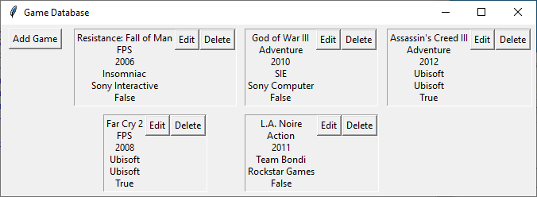
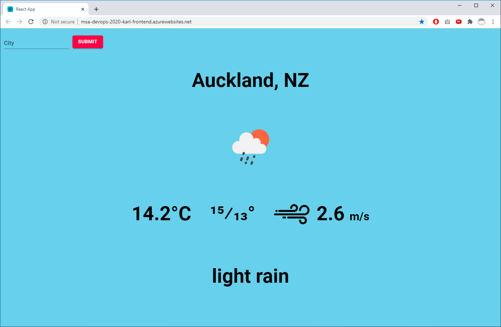
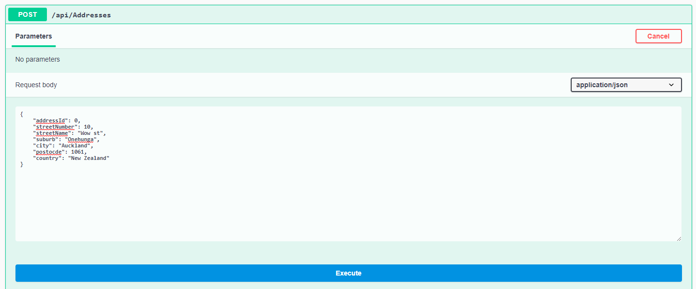

Karl Joshua Carlos
Bachelor of Science: Computer Science and Information Systems
I am currently looking for an entry-level role to start my IT career. I have learning experience in Python, Java, SQL and other languages. I am an active learner, passionate about technology and easy-going. Currently, I am getting my hands on React.js and Azure Services through MSA and side projects.
Technical Skills
Skills I have learned through university, side projects, and bootcamps such as MSA and Summer of Tech
- Python
- Git/ GitHub
- CSS
- PHP
- SQL
- Microsoft Azure Services (App Services, DevOps Pipelines)
- Java
- HTML
- JavaScript
- React
- R
Work Experience
Assembly Line Worker: HelloFresh, Sidekicker
March 2020 - Present
- Efficient Picking / Packing
- Preparing and packing food products for distribution and sale
- Following of production line processes
Senior Fry Cook, Bar Assistant: QPAM LTD, Sidekicker
Aug 2017 - March 2020
- Prepare and cook fast food for events. Senior Fry Cook – manage a small team in the kitchen to ensure certain standards and expectations are met
- Bar Assistant - Serve alcoholic beverages to patrons
Projects
A collection of projects I've done during my spare time or through bootcamps such as MSA

Python Game Database
- Personal project for storing information about currently owned games
- Show current games, edit, delete, and add titles
- Data saved to .db file for non-volatile memory in between sessions

Weather Web App
- A React.js web app where users can view weather info based on city
- Utilises OpenWeather REST API
- Supported by Azure Web App and DevOps for CI/CD implementation

Simple REST API
- A simple ASP.NET Core Web API for MSA backend project
- Implemented basic CRUD requests between two tables
- Supported by Azure SQL Database and server